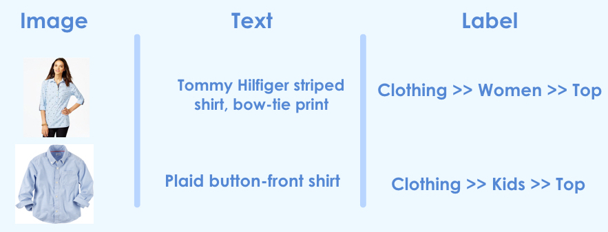
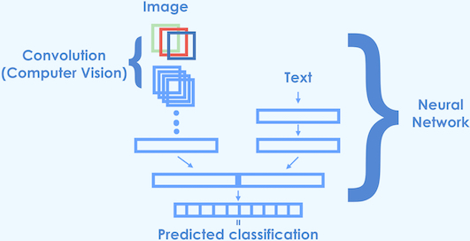

During my time at Insight I consulted a Y-combinator startup Lynks that allows people in Egypt to ship fashion and fashion related items from US e-commerce stores to their homes in Egypt. This is a useful service as many US e-commerce websites do not take orders from abroad. Lynks buys products from any e-retailer on behalf of customers through their 'universal shopping cart' and ships that inventory to the Lynks warehouse in Delaware, where it consolidates orders and ships completed ones to the end customer. Other than the couple of days that products pass-through Lynks warehouse, Lynks doesn't store inventory, so its theoretical product list is the combination of all US based e-commerce stores.
All the products that are ordered are currently classified by hand and Lynks has asked me to help prototype a pipeline that can assist in automating this task.
In the best case scenario this work will contribute to a fully automated classification pipeline; lower hanging fruit would be to assist the human labelers while more data is collected and the predictive models are improved.
The data currently collected for each product is an image and a short description of the item.
Here are two typical examples with the assigned labels that I am dealing with:

So given an image and a short description we would like to predict the label. As you can see the label is hierarchical. Given we are building a prototype I will concern myself with the flattened label. In total there are 99 unique classes and the classes are quite unbalanced, I will just work with the top 10 classes for which the classes are balanced well.
Machine learning model¶
Images¶
My goal is to combine the text and image into a single machine learning model, since they contain complementary information. Below I explain the path I took.
For the image data, I will want to make use of a convolutional neural network, while for the text data I will use NLP processing before using it in a machine learning model.
Although our data set is not small (~5000 in the training set) it can hardly be compared to Image-Net data set containing 1.2 million images in a 1000 classes.
For this reason it make sense to leverage the power of pre-trained network that has been been trained on Image-Net which already has the capability of extracting useful features for natural images. Leveraging a pre-trained machine learning model is called transfer learning. On the text side of the feature space a simple bag of words model will be sufficient given that the mere presence of a word is very informative and I don't expect a gain from interactions.
So I created a neural network that has a convolutional branch one on side while the other branch accepts the vectorized words. I settled on the following architecture for the model:

For this work I used the Keras library for which a pre-trained VGG-16 network is available. I won't go in detail on how to do the transfer learning as the author of Keras has written a very comprehesive guide to transfer learning.
Text¶
The information content of the text varies quite widely. In some cases, the item can be classified accurately using the text alone (e.g., 'men's shirt'); in other, rarer cases the text will not be as informative (e.g., 'bronx 84 graphic t'). Furthermore, the text in previous example might be difficult to classify as male or female since the text does not contain any gender information. Having said that, we have to keep in mind what the potential purposes of this classification process are. If, for example, classification is used to estimate the shipping cost of the product, a misclassification between a male and female shirt won't be of monetary importance; however, if it is used to understand the clientele in a better way this mistake is very relevant.
Performance¶
Above I explained that I would like to use a neural network architecture that combines both images and text. This is quite a cannon to wield and we should check how far we can get with just text. Below is the performance of using the text alone, the images and the combination of both.
| Images | Text | Images + Text |
|---|---|---|
| 78% | 86% | 85% |
For the text I have tried random forest and logistic regression both for which I it was easy to do hyperparameter optimization using random search, logistic regression with L2 regularization seems to have the edge over L1 regularization while none of random forest models were competitive.
Given these results it doesn’t seem justified to use deep learning which is much more involved process than running a simple and fast logistic regression.
There are how ever a few more tricks up the deep learning sleeve to try before giving up. One such trick is hyperparameter optimization, like I did with the text only model. Given that feedback loop for hyperparameter optimization is slow due to the fact that training a deep learning model takes quite a bit of time, I opted to use this only as a last measure.
A more natural way forward is to attempt to find convolutional filters that are better suited given the task at hand.
The pretrained network VVG than I’m using was trained on Image-Net which has 1000 classes, none of which to my knowledge are clothing or fashion items, so it makes sense to try and adjust the convolutional layers that have learned to identify higher-level features of the training set. This process is called fine tuning. I opted for fine-tuning the last 3 convolutional layers, here are the results.
| Images | Text | Images + Text | Images + Text + Fine Tuning |
|---|---|---|---|
| 78% | 86% | 85% | 88% |
The fine tuning brought another 3% in accuracy, making the deep learning model clearly the best model with 88% accuracy. The errors on these classification metrics are of the order 0.01% so all the differences here are significant.
Adding Trees¶
There are however still a few examples that have been misclassified that puzzle me. For example a normal looking men's shirt with the following text "ralph lauren men's button-down pony logo plaid shirt" is still being misclassified by the model as "Clothing >> Women >> Dress". It seems like a simple decision tree would be able to tell you that it is is not a woman's dress. This raises the question, can we leverage a simple decision tree based model in combination with the deep learning model to get a better prediction? And if so how do you combine the models?
Model averaging has been proven to be very powerful in the past, but in this case I opted for a strategy inspired by my intuition that I mentioned above. A simple decision tree can tell you very well in which categories the object cannot be. So a very simple model is one that sets the probability of an object belonging to a class to zero if the decision tree predicts a zero probability and renormalizing the other other values of the deep learning model. This works better than model averaging in my case.
This leads to a total accuracy of 91% for a simple, rather shallow, decision tree and up to 93% if a random forest model is used.
| Images | Text | Images + Text | Images + Text + Fine Tuning | Images + Text + Fine Tuning + RandomForest |
|---|---|---|---|---|
| 78% | 86% | 85% | 88% | 93% |
So in conclusion, a deep learning model in combination with a random forest model has the best performance for this classification problem, but a simple logistic regression will you get you a very long way there.